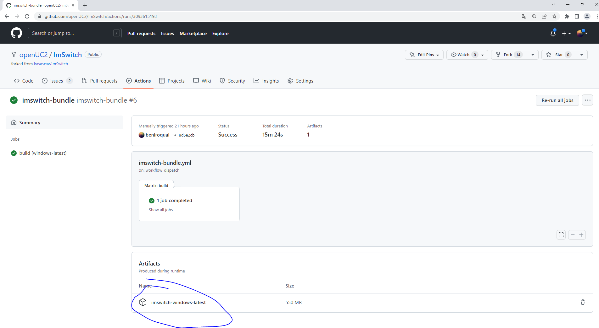
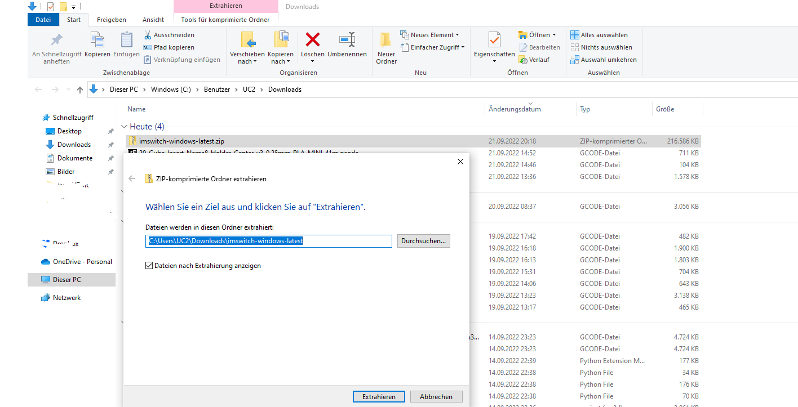
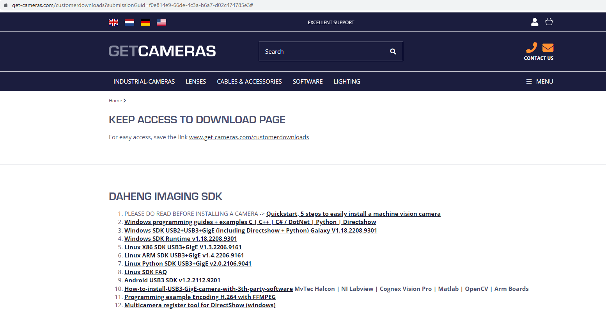
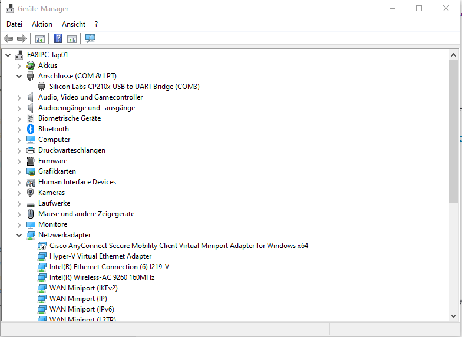
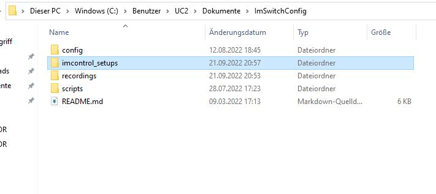
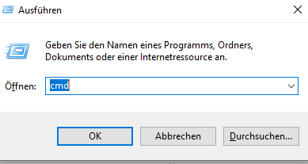
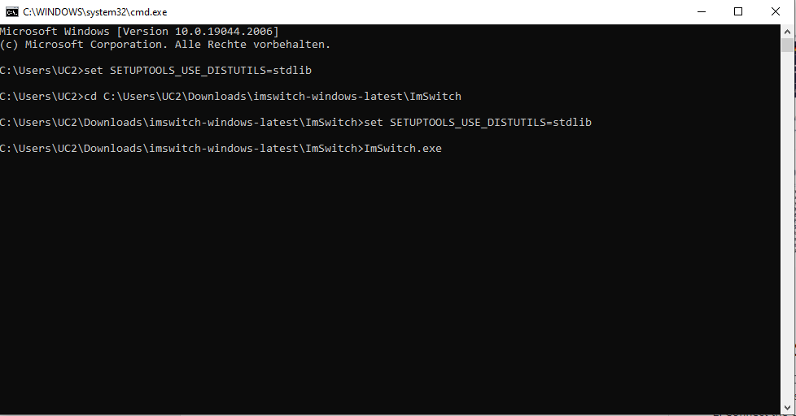
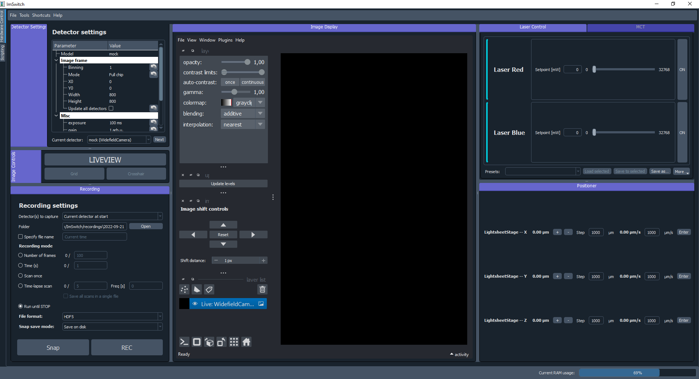

Please go to our ImSwitch Repository and download the latest Build-artefact:

Right click on the downloaded ZIP folder and select "extract all". This may take a while.

Electronics Board (CH340)
For the CH340 driver, please follow these instructions
The driver is available here
Download the Windows CH340 Driver
Unzip the file
Run the installer which you unzipped
In the Device Manager when the CH340 is connected you will see a COM Port in the Tools > Serial Port menu, the COM number for your device may vary depending on your system.
Electronics Board (CP210x)
The driver for the CP210x is available here
Download the Windows CP210x Driver
Unzip the file
Run the installer which you unzipped
In the Device Manager when the CP210x is connected you will see a COM Port in the Tools > Serial Port menu, the COM number for your device may vary depending on your system.
Daheng Imaging Cameras
Download the Windows SDK USB2+USB3+GigE (including Directshow + Python) Galaxy V1.18.2208.9301 for the Daheng USB3 Cameras from the Get-Cameras Website

Install the packages on your computer.

In order to use the UC2 Hardware and the Daheng USB Camera, you need the UC2 config files. Please go to https://github.com/openUC2/ImSwitchConfig/tree/stable and download the Repository as a zip file following this link.
Once it has been downloaded, unzip it to C:\Users\YOURUSERNAME\Documents\ImSwitchConfig
It should look like this:

WIN+R, then type CMD and hit enter.
cd C:\Users\UC2\Downloads\imswitch-windows-latest\ImSwitch and hit enterset SETUPTOOLS_USE_DISTUTILS=stdlibImSwitch.exe and hit enter, the executable will open the ImSwitch GUI
If everything has been configured correctly, the GUI should open and look like this. Additional information on its functionality can be found in the Read-The-Docs: https://imswitch.readthedocs.io/en/stable/

If you have any additional questions or issues, please post them in the ISSUE section here.